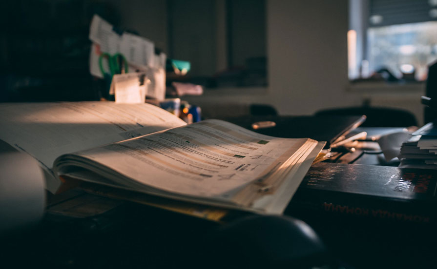

From Rags to Riches: The Top 10 Startup Founders Who Turned Their Pocket Change into Billions
Welcome, fellow adventurers, to the wild and wacky world of startup success! Today, we're diving into the incredible stories of 10 startup founders who went from scraping pennies off the sidewalk to swimming in pools of gold. Get ready for a rollercoaster ride of laughter, inspiration, and maybe even a few facepalms along the way! The Accidental Entrepreneur: Meet Bob "The Basement Dweller" Johnson, whose brilliant idea for a sock-sorting app was born out of sheer laziness. From losing socks in the laundry to founding a multimillion-dollar startup, Bob proves that sometimes the best inventions come from the laziest minds! The Garage Gangster: Next up, we have Sarah "The Garage Guru" Smith, whose tech startup began in her parents' garage with nothing but a broken laptop and a dream. Despite her neighbors' complaints about the noise, Sarah's company skyrocketed to success, proving that you don't need a fancy office to make it big! The Dumpster Diver: Ever heard of Dave "The Dumpster Diver" Thompson? This eco-friendly entrepreneur started his recycling business by scavenging through dumpsters for discarded treasures. Today, he's not only saving the planet but also rolling in cash – talk about turning trash into treasure! The Ramen Noodle Ninja: Who could forget Mike "The Ramen Noodle Ninja" Rodriguez, whose diet consisted solely of instant ramen while he poured every penny into his startup? Despite his questionable nutrition choices, Mike's perseverance paid off, and now he's living the high life – with a much-improved diet, of course! The Doggone Genius: Say hello to Lily "The Canine Connoisseur" Chen, whose pet-themed startup was inspired by her love for furry friends. From dog-walking to doggy daycare, Lily's business blossomed faster than a puppy's tail wag – and now she's living the dream with her own pack of pampered pooches! The Mompreneur Extraordinaire: Meet Emily "The Mompreneur Maven" Baker, whose startup journey began in the chaos of motherhood. Juggling diapers and deadlines, Emily built her empire from the kitchen table, proving that you can run a business while wiping sticky fingers and singing lullabies – multitasking at its finest! The Coffee Shop Connoisseur: Introducing Tom "The Caffeine King" Nguyen, whose caffeine-fueled brainstorming sessions at the local coffee shop led to the creation of his coffee delivery startup. With every cup of joe, Tom brewed up success – and now he's laughing all the way to the bank, one latte at a time! The Thrift Store Tycoon: Say hi to Jessica "The Thrift Store Queen" Taylor, whose love for vintage fashion turned into a booming online thrift store empire. From bargain hunting to fashion icon, Jessica's quirky sense of style and savvy business skills prove that one person's trash is another person's treasure – cha-ching! The Bedroom Business Baron: Meet Alex "The Bedroom Business Baron" Patel, whose startup empire began in the cozy confines of his childhood bedroom. Armed with nothing but a laptop and a dream, Alex built his tech empire – and now he's got more than just a corner office, he's got the whole house! The Backpacker Billionaire: Last but not least, we have Jake "The Backpacker Billionaire" Williams, whose world travels inspired his adventure-themed startup. From hostel hopping to boardroom meetings, Jake's journey proves that sometimes the best business ideas are found off the beaten path – with a backpack full of dreams! Conclusion: And there you have it, folks – 10 hilarious and heartwarming tales of startup success! From basement dwellers to backpackers, these entrepreneurs prove that with a little creativity, determination, and maybe a touch of insanity, anything is possible. So here's to dreaming big, laughing often, and never underestimating the power of a good idea – no matter where it comes from